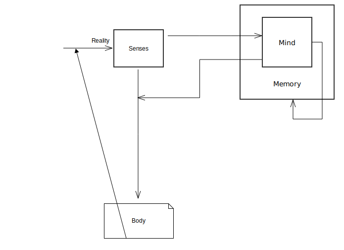

"Anyone who wants to know the human psyche will learn next to nothing from
experimental psychology. He would be better advised to abandon exact science,
put away his scholar's gown, bid farewell to his study, and wander with human
heart throught the world. There in the horrors of prisons, lunatic asylums and
hospitals, in drab suburban pubs, in brothels and gambling-hells, in the
salons of the elegant, the Stock Exchanges, socialist meetings, churches,
revivalist gatherings and ecstatic sects, through love and hate, through the
experience of passion in every form in his own body, he would reap richer
stores of knowledge than text-books a foot thick could give him, and he will
know how to doctor the sick with a real knowledge of the human soul."
-- Carl Jung
There are multiple systems for personality types.
1. Astrology
2. MBTI
3. Enneagram
4. Socionics
5. Choleric
Is it possible to realize these types from the physiology of the brain ?

Consider the information pathways,
1. Thinker
2. Sensor
3. Controller
4. Feeler
5. Intuition
For all the above, Memory acts as the background.
Defense Mechanisms
==================
Rationalization, Denial (T)
Anxiety, Avoidance (S)
Obsessiveness, Acting Out, Undoing (C)
Regression, Giving In (F)
Projection (I)
Dissociation, Repression (M)
Mature Mechanisms
=================
Compensation (T)
Flow (S)
Planning (C)
Sublimation, Golden Rule, Assertiveness (F)
Humour (I)
Integrity (M)
Learning Styles
===============
Exploration (T)
Sensation (S)
Perspectives (C)
History, Conditioning (F)
Imagination (I)
Repitition (M)
Romance Styles
==============
Creative (T)
Sensual (S)
Careful (C)
Childish (F)
Fantasy (I)
Decision Making Styles
=======================
Accuracy (T)
Harmony (S)
Effectiveness (C)
Authenticity (F)
Big Picture (I)
Experience (M)
Misc
====
1. Best way to converse with people, S C F T I (skafty).
2. An unbalanced personality has weaknesses in one or more of the pathways.
3. Each pathway starts as a crying child and grows up in maturity through imitation.
4. This aspects that are least developed are usually called Inner Child / Shadow / Id
respectively.
References
==========
1. Personality Hacker
2. Socionics
3. Godly Personalities
4. Human Metrics
5. Cognitive Processes